Read this first
No flow signal survives validation at this site. Curves and tables below are correct arithmetic on a relationship that is not detectable in this record. They are retained so the pipeline can be audited end to end, not so the numbers can be quoted. Every section is labelled accordingly.
This is a result, not a failure. It says that ~40 years of annual data cannot resolve a flow effect on these vital rates at this site, and that releases cannot be timed to trout on this evidence.
For every day of the calendar year, two curves per site:
and one derived curve:
| Process | Model | Years | Eff. df | In-sample | Leave-one-out | Blocked CV | Perm. p | Passes | |
|---|---|---|---|---|---|---|---|---|---|
| 7 | recruitment | daily β(d), fpc | 33 | 6 | 0.327 | -0.032 | -0.150 | 0.364 | no |
| 8 | recruitment | 4 windows | 33 | 4 | NA | -0.275 | -0.650 | 0.970 | no |
| 19 | survival | daily β(d), fpc | 32 | 6 | 0.668 | 0.369 | 0.315 | 0.031 | yes |
| 20 | survival | 4 windows | 32 | 4 | NA | -0.142 | -0.235 | 0.469 | no |
β(d) is the effect on the response of one standard deviation of extra flow on day d, holding every other day fixed. It is the primary estimate — everything in §3 and §4 is a summary of it.
Read it against its band, not as a line. Where the interval spans zero the data cannot tell the sign of the effect on that day, however sharp the peak looks.
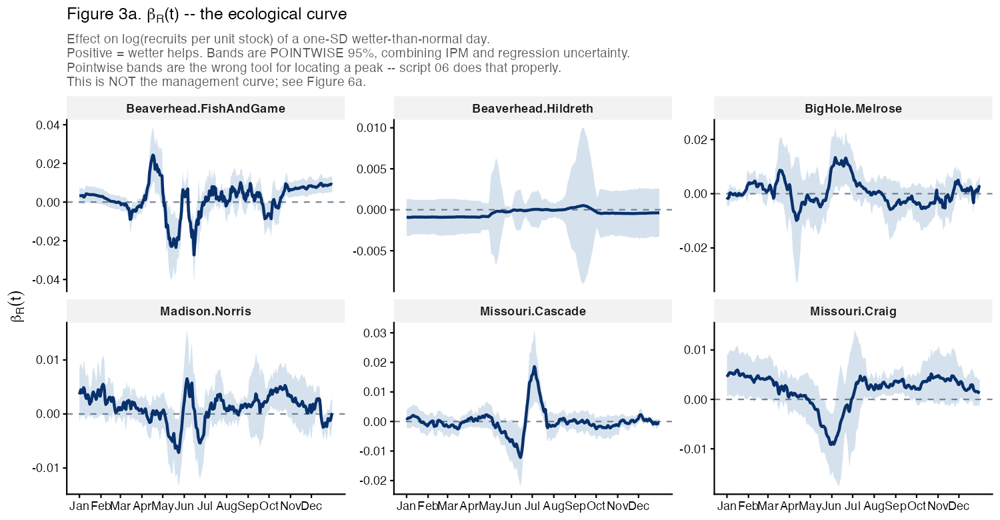
At BigHole.Melrose, β(d) is largest on 06 Jun and most negative on 11 Apr. Its 95% interval excludes zero on 11% of days.
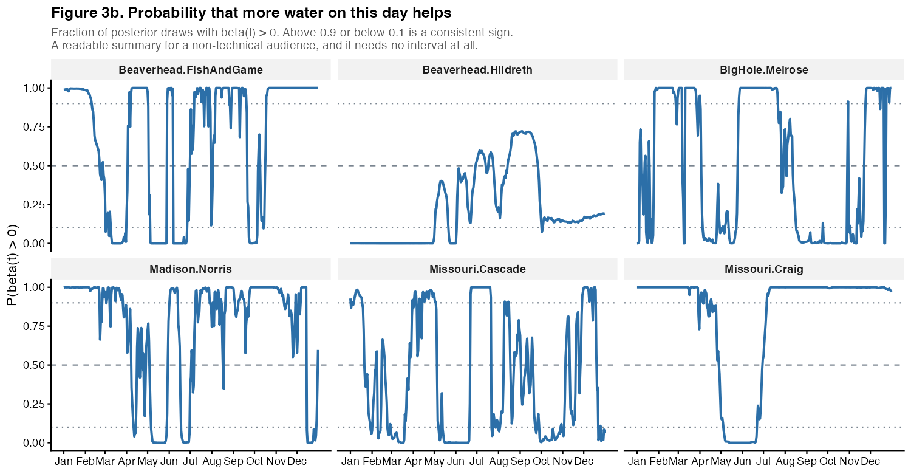
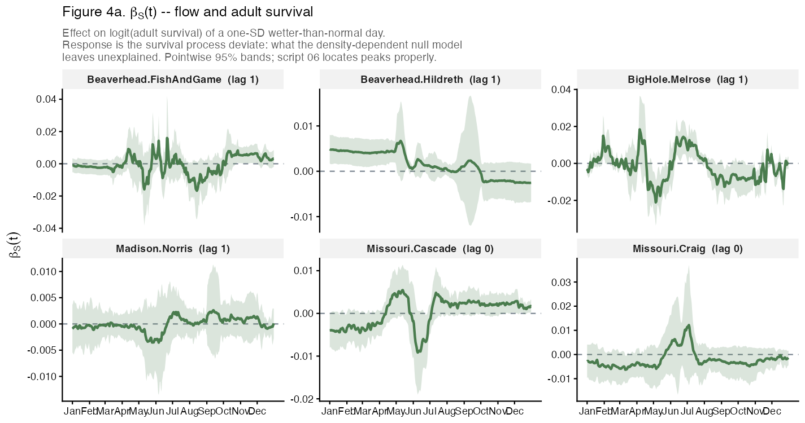
The survival curve is fitted at a lag of 1/0 year(s), chosen by the sweep in script 04 and gated in script 05. That lag is fitted independently of the recruitment flow lag, so the two curves need not describe the same year.
β(d) from this estimator is a weighted sum of eigenfunctions of the hydrographs. Plotting the modes shows what shape of flow variation the model responds to, which β(d) alone does not reveal.
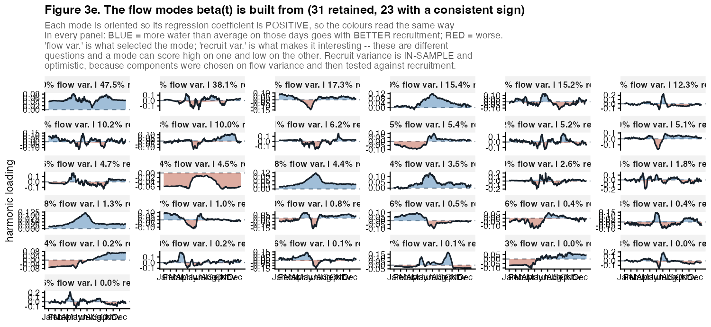
| Site | Mode | Flow var. (%) | Recruit var. (%) | P(consistent sign) | Supported |
|---|---|---|---|---|---|
| Beaverhead.FishAndGame | FPC1 | 66.0 | 47.5 | 1.00 | yes |
| Beaverhead.FishAndGame | FPC5 | 2.8 | 38.1 | 1.00 | yes |
| Beaverhead.FishAndGame | FPC3 | 5.1 | 6.2 | 1.00 | yes |
| Beaverhead.FishAndGame | FPC4 | 3.6 | 4.7 | 1.00 | yes |
| Beaverhead.FishAndGame | FPC6 | 1.9 | 2.6 | 0.99 | yes |
| Beaverhead.FishAndGame | FPC2 | 12.3 | 0.0 | 0.53 | no |
| Beaverhead.Hildreth | FPC1 | 72.4 | 4.5 | 1.00 | yes |
| Beaverhead.Hildreth | FPC2 | 14.4 | 0.2 | 0.86 | no |
| Beaverhead.Hildreth | FPC3 | 3.7 | 0.1 | 0.78 | no |
| BigHole.Melrose | FPC1 | 46.9 | 15.4 | 1.00 | yes |
| BigHole.Melrose | FPC4 | 4.8 | 15.2 | 1.00 | yes |
| BigHole.Melrose | FPC6 | 3.4 | 1.8 | 1.00 | yes |
| BigHole.Melrose | FPC2 | 12.6 | 0.4 | 0.92 | yes |
| BigHole.Melrose | FPC3 | 7.8 | 0.2 | 0.84 | no |
| BigHole.Melrose | FPC5 | 3.6 | 0.0 | 0.51 | no |
| Madison.Norris | FPC5 | 4.2 | 10.2 | 1.00 | yes |
| Madison.Norris | FPC3 | 11.3 | 10.0 | 1.00 | yes |
| Madison.Norris | FPC6 | 3.2 | 5.2 | 1.00 | yes |
| Madison.Norris | FPC1 | 42.4 | 3.5 | 0.99 | yes |
| Madison.Norris | FPC4 | 6.3 | 0.4 | 0.68 | no |
| Madison.Norris | FPC2 | 11.6 | 0.1 | 0.63 | no |
| Missouri.Cascade | FPC5 | 2.5 | 12.3 | 1.00 | yes |
| Missouri.Cascade | FPC2 | 12.5 | 5.4 | 1.00 | yes |
| Missouri.Cascade | FPC4 | 4.0 | 5.1 | 1.00 | yes |
| Missouri.Cascade | FPC1 | 67.8 | 1.3 | 0.97 | yes |
| Missouri.Cascade | FPC3 | 5.7 | 1.0 | 0.91 | yes |
| Missouri.Craig | FPC3 | 5.8 | 17.3 | 1.00 | yes |
| Missouri.Craig | FPC1 | 68.8 | 4.4 | 1.00 | yes |
| Missouri.Craig | FPC4 | 4.0 | 0.8 | 0.99 | yes |
| Missouri.Craig | FPC2 | 10.6 | 0.5 | 0.91 | yes |
| Missouri.Craig | FPC5 | 2.3 | 0.0 | 0.53 | no |
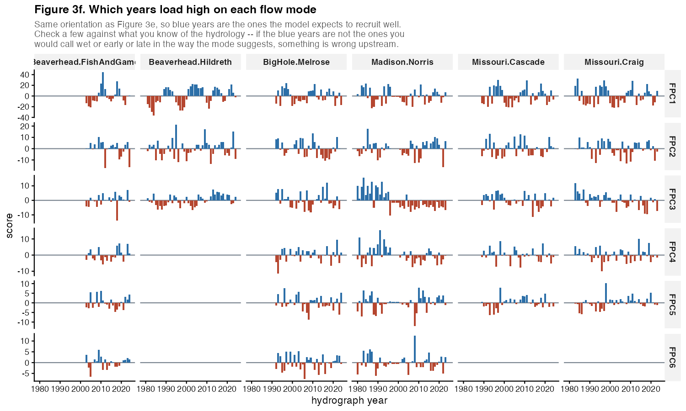
The mode explaining the most recruitment variance is FPC1, which carries 66.0% of hydrograph variation but 47.5% of variation in log(R/S). It is also the leading mode, so in this case selection on flow variance and relevance to recruitment happen to agree.
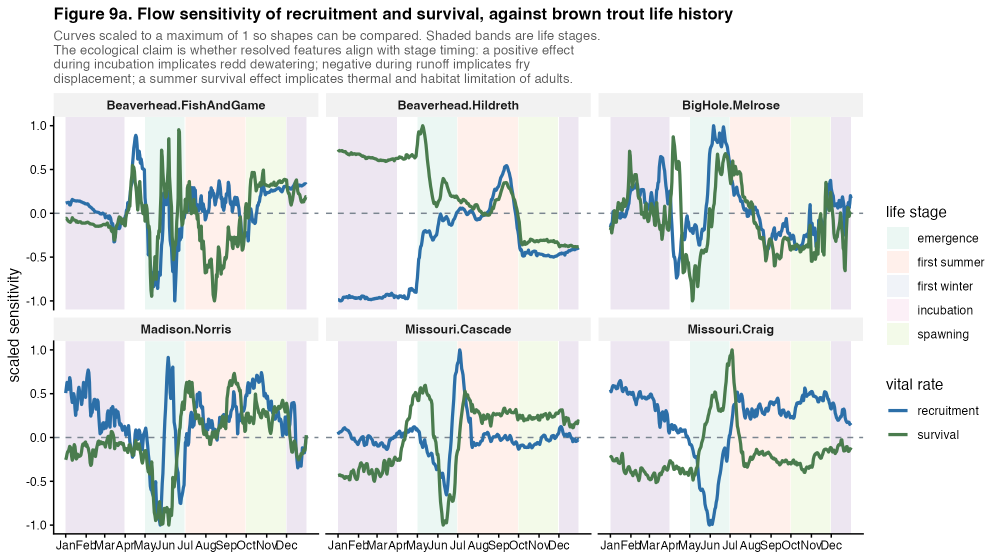
| Site | Vital rate | Life stage | Mean β | Fraction of stage positive |
|---|---|---|---|---|
| Beaverhead.FishAndGame | recruitment | emergence | -0.00994 | 0.18 |
| Beaverhead.FishAndGame | recruitment | first summer | 0.00281 | 0.86 |
| Beaverhead.FishAndGame | recruitment | first winter | 0.00254 | 0.69 |
| Beaverhead.FishAndGame | recruitment | incubation | 0.00254 | 0.69 |
| Beaverhead.FishAndGame | recruitment | spawning | 0.00420 | 0.79 |
| Beaverhead.FishAndGame | survival | emergence | -0.00086 | 0.48 |
| Beaverhead.FishAndGame | survival | first summer | -0.00551 | 0.20 |
| Beaverhead.FishAndGame | survival | first winter | -0.00058 | 0.26 |
| Beaverhead.FishAndGame | survival | incubation | -0.00058 | 0.26 |
| Beaverhead.FishAndGame | survival | spawning | 0.00538 | 0.95 |
| Beaverhead.Hildreth | recruitment | emergence | -0.00018 | 0.03 |
| Beaverhead.Hildreth | recruitment | first summer | 0.00012 | 0.70 |
| Beaverhead.Hildreth | recruitment | first winter | -0.00077 | 0.00 |
| Beaverhead.Hildreth | recruitment | incubation | -0.00077 | 0.00 |
| Beaverhead.Hildreth | recruitment | spawning | -0.00043 | 0.00 |
| Beaverhead.Hildreth | survival | emergence | 0.00274 | 1.00 |
| Beaverhead.Hildreth | survival | first summer | 0.00084 | 0.88 |
| Beaverhead.Hildreth | survival | first winter | 0.00258 | 0.74 |
| Beaverhead.Hildreth | survival | incubation | 0.00258 | 0.74 |
| Beaverhead.Hildreth | survival | spawning | -0.00208 | 0.00 |
| BigHole.Melrose | recruitment | emergence | 0.00472 | 0.59 |
| BigHole.Melrose | recruitment | first summer | -0.00081 | 0.41 |
| BigHole.Melrose | recruitment | first winter | 0.00203 | 0.78 |
| BigHole.Melrose | recruitment | incubation | 0.00203 | 0.78 |
| BigHole.Melrose | recruitment | spawning | -0.00235 | 0.15 |
| BigHole.Melrose | survival | emergence | -0.00180 | 0.44 |
| BigHole.Melrose | survival | first summer | -0.00199 | 0.39 |
| BigHole.Melrose | survival | first winter | 0.00001 | 0.49 |
| BigHole.Melrose | survival | incubation | 0.00001 | 0.49 |
| BigHole.Melrose | survival | spawning | -0.00614 | 0.15 |
| Madison.Norris | recruitment | emergence | -0.00158 | 0.34 |
| Madison.Norris | recruitment | first summer | 0.00155 | 0.93 |
| Madison.Norris | recruitment | first winter | 0.00188 | 0.87 |
| Madison.Norris | recruitment | incubation | 0.00188 | 0.87 |
| Madison.Norris | recruitment | spawning | 0.00307 | 1.00 |
| Madison.Norris | survival | emergence | -0.00179 | 0.15 |
| Madison.Norris | survival | first summer | 0.00106 | 0.95 |
| Madison.Norris | survival | first winter | -0.00037 | 0.11 |
| Madison.Norris | survival | incubation | -0.00037 | 0.11 |
| Madison.Norris | survival | spawning | 0.00099 | 1.00 |
| Missouri.Cascade | recruitment | emergence | -0.00264 | 0.21 |
| Missouri.Cascade | recruitment | first summer | 0.00203 | 0.50 |
| Missouri.Cascade | recruitment | first winter | -0.00015 | 0.43 |
| Missouri.Cascade | recruitment | incubation | -0.00015 | 0.43 |
| Missouri.Cascade | recruitment | spawning | -0.00095 | 0.23 |
| Missouri.Cascade | survival | emergence | -0.00140 | 0.43 |
| Missouri.Cascade | survival | first summer | 0.00254 | 0.97 |
| Missouri.Cascade | survival | first winter | -0.00212 | 0.26 |
| Missouri.Cascade | survival | incubation | -0.00212 | 0.26 |
| Missouri.Cascade | survival | spawning | 0.00216 | 1.00 |
| Missouri.Craig | recruitment | emergence | -0.00447 | 0.02 |
| Missouri.Craig | recruitment | first summer | 0.00295 | 1.00 |
| Missouri.Craig | recruitment | first winter | 0.00359 | 1.00 |
| Missouri.Craig | recruitment | incubation | 0.00359 | 1.00 |
| Missouri.Craig | recruitment | spawning | 0.00391 | 1.00 |
| Missouri.Craig | survival | emergence | 0.00205 | 0.66 |
| Missouri.Craig | survival | first summer | -0.00131 | 0.16 |
| Missouri.Craig | survival | first winter | -0.00376 | 0.00 |
| Missouri.Craig | survival | incubation | -0.00376 | 0.00 |
| Missouri.Craig | survival | spawning | -0.00316 | 0.00 |
Beaverhead.FishAndGame. For recruitment, the strongest positive association is during spawning and the strongest negative during emergence. For survival, the strongest positive association is during spawning and the strongest negative during first summer.
Both vital rates peak in the same stage, implying a single seasonal bottleneck.
Beaverhead.Hildreth. For recruitment, the strongest positive association is during first summer and the strongest negative during incubation. For survival, the strongest positive association is during emergence and the strongest negative during spawning.
Recruitment and survival peak in different life stages (recruitment: first summer; survival: emergence), which implies the two vital rates are flow-limited at different times of year and that the bottleneck shifts seasonally.
BigHole.Melrose. For recruitment, the strongest positive association is during emergence and the strongest negative during spawning. For survival, the strongest positive association is during first winter and the strongest negative during spawning.
Recruitment and survival peak in different life stages (recruitment: emergence; survival: first winter; survival: incubation), which implies the two vital rates are flow-limited at different times of year and that the bottleneck shifts seasonally.
Madison.Norris. For recruitment, the strongest positive association is during spawning and the strongest negative during emergence. For survival, the strongest positive association is during first summer and the strongest negative during emergence.
Recruitment and survival peak in different life stages (recruitment: spawning; survival: first summer), which implies the two vital rates are flow-limited at different times of year and that the bottleneck shifts seasonally.
Missouri.Cascade. For recruitment, the strongest positive association is during first summer and the strongest negative during emergence. For survival, the strongest positive association is during first summer and the strongest negative during incubation.
Both vital rates peak in the same stage, implying a single seasonal bottleneck.
Missouri.Craig. For recruitment, the strongest positive association is during spawning and the strongest negative during emergence. For survival, the strongest positive association is during emergence and the strongest negative during incubation.
Recruitment and survival peak in different life stages (recruitment: spawning; survival: emergence), which implies the two vital rates are flow-limited at different times of year and that the bottleneck shifts seasonally.
Interpretation requires the life-history timeline in
output/tables/life_history_timeline.csv to be correct for
this system. Edit LIFE in R/09_figures.R and
cite the source.
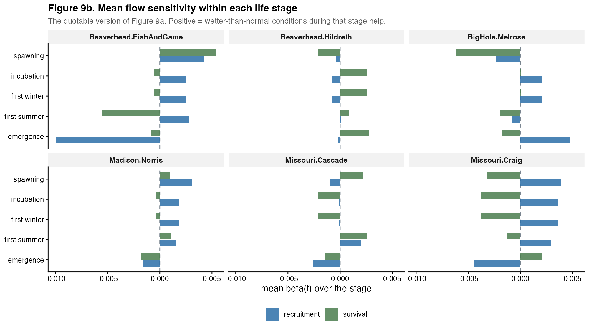
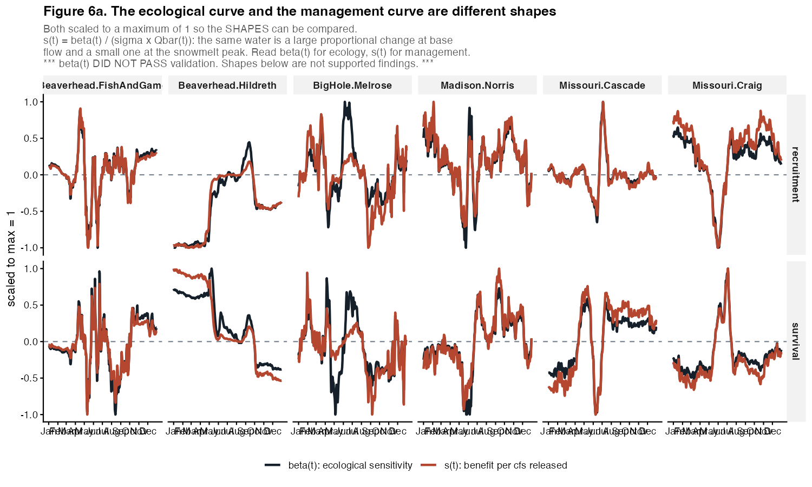
This is the practical core. β(d) says when the population is sensitive to hydrology; s(d) says when a unit of released water buys the most fish. They differ because the same water is a large proportional change at base flow and a small one at the snowmelt peak.
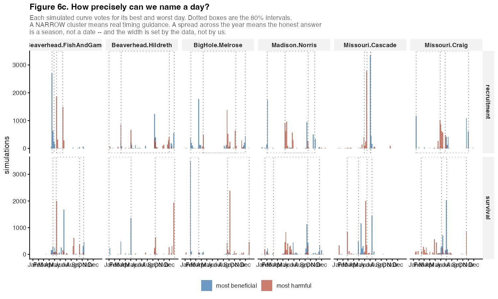
| Process | Which | Window | Median | Width (days) | Credible level | Resolvable | |
|---|---|---|---|---|---|---|---|
| 7 | recruitment | most beneficial day | 02 Feb – 30 Nov | 20 Mar | 301 | 80% | no — report a season |
| 8 | recruitment | most harmful day | 11 Apr – 09 Oct | 24 Aug | 181 | 80% | no — report a season |
| 19 | survival | most beneficial day | 30 Jan – 18 Mar | 30 Jan | 47 | 80% | yes |
| 20 | survival | most harmful day | 24 Aug – 22 Dec | 06 Sep | 120 | 80% | no — report a season |
At least one window exceeds 90 days. For those, no date should be reported anywhere in the manuscript or in guidance to managers — the record supports a season, not a week. Stating a date would give actionable-looking advice built on noise, which is worse than declining to advise, because water gets moved and money gets spent.
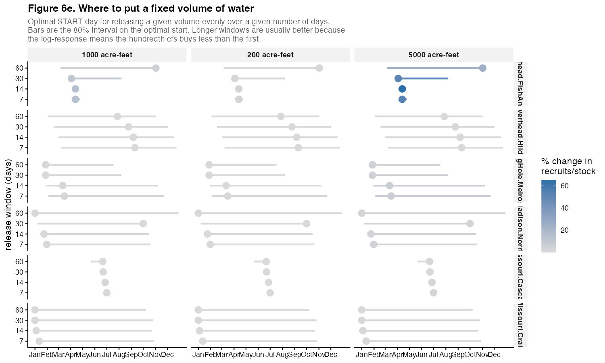
| Volume (acre-ft) | Window (days) | Sustained cfs | Best start | Start range | Effect (%) | P(positive) |
|---|---|---|---|---|---|---|
| 200 | 7 | 14.4 | 16 Mar | 04 Feb – 22 Nov | 0.33 | 0.9 |
| 1000 | 7 | 72.0 | 16 Mar | 04 Feb – 22 Nov | 1.59 | 0.9 |
| 5000 | 7 | 360.1 | 16 Mar | 04 Feb – 22 Nov | 6.58 | 0.9 |
Sections 3.1–3.3 use the full calendar year, which is the right ecological domain — β(d) is estimated over all 365 days and should be reported that way. But nobody can release water in February. Leased water, shepherded water and reservoir re-timing are negotiated and delivered across the irrigation season.
Restricting to that season is a constrained optimisation, not a zoom. The best feasible day is an argmax over a subset and can be a different day; its credible interval has to be recomputed within the subset rather than truncated; and release schedules must be restricted to starts whose full duration fits inside the season.
The window used here is the irrigation and allocation
season: 01 May to 31 Oct, 184 days. Set it in
config.R under CFG$decision_window.
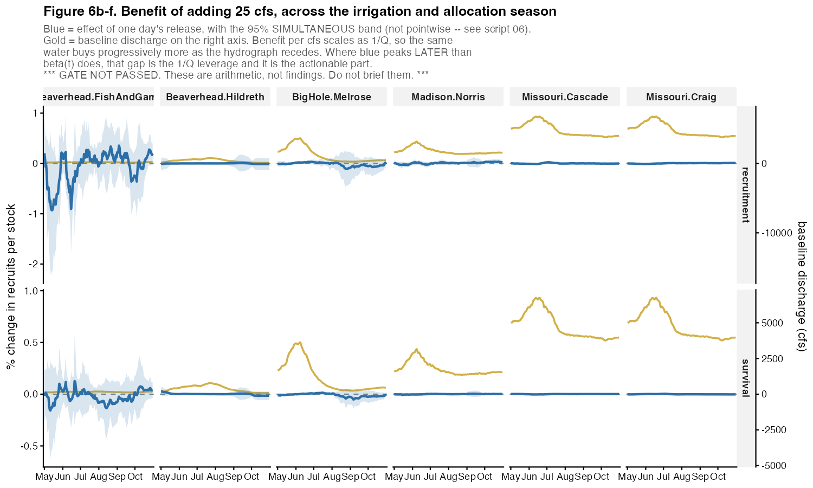
Baseline discharge is on the right axis for a reason. Benefit per cfs scales as 1/Q, and discharge falls sharply from the snowmelt peak to autumn base flow — so the same acre-foot buys progressively more as the season goes on. Where the benefit curve peaks later than β(d) does, that gap is pure 1/Q leverage, and it is the part a water user can act on.
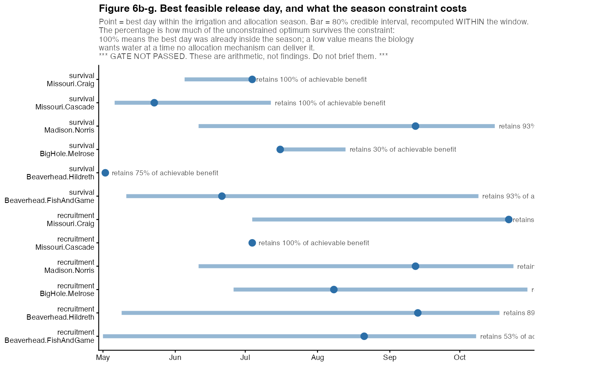
| Process | Site | Best day (unconstrained) | Best feasible day | Feasible window | Width (days) | Benefit retained | Constraint binds | Resolvable | |
|---|---|---|---|---|---|---|---|---|---|
| 4 | recruitment | BigHole.Melrose | 20 Mar | 08 Aug | 26 Jun – 30 Oct | 126 | 44% | 88% of draws | no — report a period |
| 10 | survival | BigHole.Melrose | 30 Jan | 16 Jul | 15 Jul – 13 Aug | 29 | 30% | 97% of draws | yes |
The biology wants water when the allocation system cannot deliver it. The best feasible day retains only 30% of the unconstrained optimum. This is a finding, not a nuisance: it says the binding constraint on trout benefit here is not how much water is available for lease but when it can be moved. That conclusion belongs in the abstract, and it points at a different intervention — changing the rules about when water can be re-timed — rather than at buying more of it.
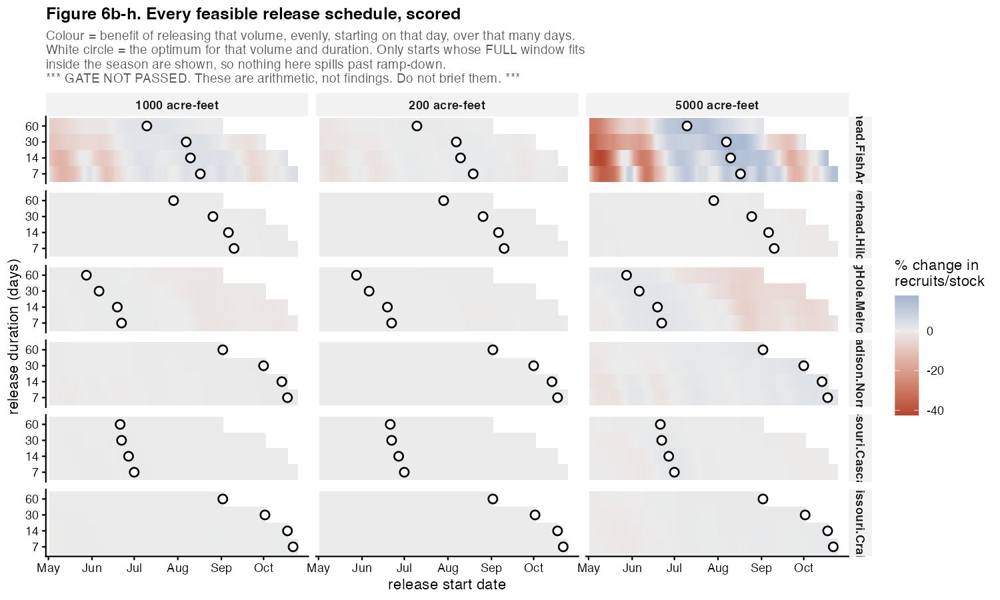
| Volume (acre-ft) | Duration (days) | Sustained cfs | Start | End | Start range | Effect (%) | P(positive) |
|---|---|---|---|---|---|---|---|
| 200 | 7 | 14.4 | 22 Jun | 28 Jun | 21 Jun – 22 Aug | 0.12 | 0.99 |
| 1000 | 7 | 72.0 | 22 Jun | 28 Jun | 21 Jun – 17 Aug | 0.58 | 0.99 |
| 5000 | 7 | 360.1 | 22 Jun | 28 Jun | 20 Jun – 14 Aug | 2.76 | 0.99 |
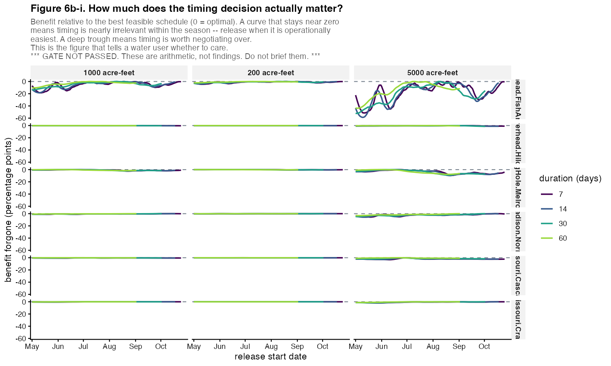
Across schedules, a median of 6% of feasible start dates land within 10% of the best achievable benefit.
Timing is the binding decision. Only a narrow part of the season is near-optimal, so when the water moves matters as much as how much of it there is. This is the case where negotiating for a specific delivery window is worth the transaction cost — provided the interval in the table above is narrow enough to name one.
None of this section is supported. The validation gate in script 05 did not pass for at least one curve used here. The schedules above are correct arithmetic on a relationship the record cannot demonstrate, and must not be briefed to managers or included as a recommendation.
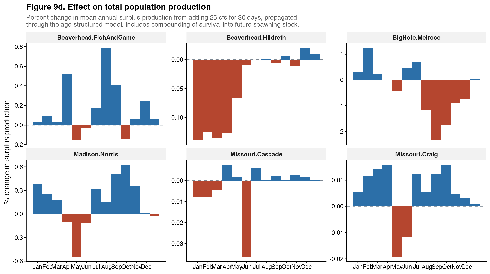
| Site | Best block | Best (%) | Worst block | Worst (%) |
|---|---|---|---|---|
| BigHole.Melrose | 31 Jan | 1.24 | 29 Aug | -2.33 |
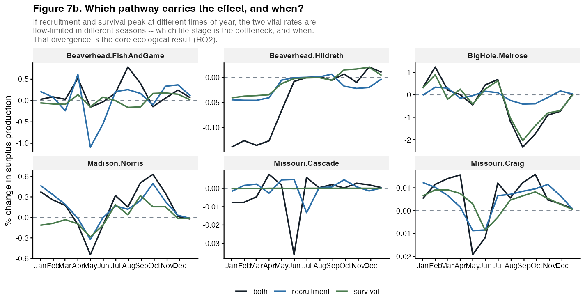
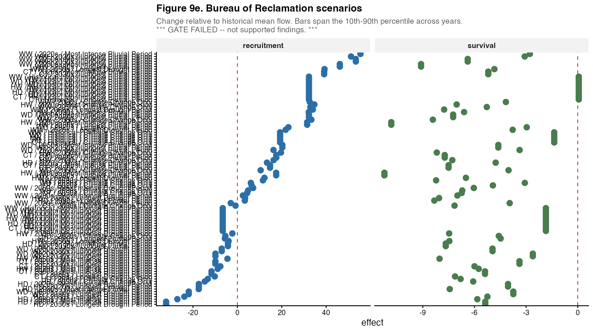
| Scenario | Period | Type | Process | Years | Effect | 10th–90th | Extrapolating | Status |
|---|---|---|---|---|---|---|---|---|
| HD | 2050s | Longest Drought Period | recruitment | 24 | -32.11 | -32.11 – -32.11 | 15% | UNSUPPORTED - gate failed |
| HD | 2050s | Most Intense Drought Period | recruitment | 24 | -32.11 | -32.11 – -32.11 | 15% | UNSUPPORTED - gate failed |
| HD | 2080s | Most Intense Drought Period | recruitment | 25 | -27.04 | -27.04 – -27.04 | 24% | UNSUPPORTED - gate failed |
| HD | 2080s | Longest Drought Period | recruitment | 25 | -23.89 | -23.89 – -23.89 | 23% | UNSUPPORTED - gate failed |
| WD | 2050s | Longest Drought Period | recruitment | 24 | -21.91 | -21.91 – -21.91 | 12% | UNSUPPORTED - gate failed |
| WD | 2050s | Most Intense Drought Period | recruitment | 24 | -21.91 | -21.91 – -21.91 | 12% | UNSUPPORTED - gate failed |
| HD | 2080s | Most Intense Pluvial Period | recruitment | 25 | -17.40 | -17.4 – -17.4 | 24% | UNSUPPORTED - gate failed |
| HD | 2020s | Longest Drought Period | recruitment | 24 | -17.36 | -17.36 – -17.36 | 13% | UNSUPPORTED - gate failed |
| HD | 2020s | Most Intense Drought Period | recruitment | 24 | -17.36 | -17.36 – -17.36 | 13% | UNSUPPORTED - gate failed |
| HD | 2050s | Climate Change Only | recruitment | 24 | -14.68 | -14.68 – -14.68 | 15% | UNSUPPORTED - gate failed |
| HD | 2080s | Climate Change Only | recruitment | 25 | -13.34 | -13.34 – -13.34 | 26% | UNSUPPORTED - gate failed |
| CT | 2080s | Longest Drought Period | recruitment | 25 | -11.63 | -11.63 – -11.63 | 17% | UNSUPPORTED - gate failed |
| CT | 2080s | Most Intense Drought Period | recruitment | 25 | -11.63 | -11.63 – -11.63 | 17% | UNSUPPORTED - gate failed |
| CT | 2050s | Longest Drought Period | recruitment | 24 | -10.20 | -10.2 – -10.2 | 16% | UNSUPPORTED - gate failed |
| CT | 2020s | Longest Drought Period | recruitment | 24 | -9.91 | -9.91 – -9.91 | 10% | UNSUPPORTED - gate failed |
| CT | 2020s | Most Intense Drought Period | recruitment | 24 | -9.91 | -9.91 – -9.91 | 10% | UNSUPPORTED - gate failed |
| WD | 2020s | Longest Drought Period | recruitment | 24 | -9.88 | -9.88 – -9.88 | 10% | UNSUPPORTED - gate failed |
| WD | 2020s | Most Intense Drought Period | recruitment | 24 | -9.88 | -9.88 – -9.88 | 10% | UNSUPPORTED - gate failed |
| HW | 2020s | Most Intense Drought Period | recruitment | 24 | -8.84 | -8.84 – -8.84 | 16% | UNSUPPORTED - gate failed |
| CT | 2050s | Most Intense Drought Period | recruitment | 24 | -7.66 | -7.66 – -7.66 | 14% | UNSUPPORTED - gate failed |
| WD | 2080s | Longest Drought Period | recruitment | 25 | -7.04 | -7.04 – -7.04 | 13% | UNSUPPORTED - gate failed |
| WD | 2080s | Most Intense Drought Period | recruitment | 25 | -7.04 | -7.04 – -7.04 | 13% | UNSUPPORTED - gate failed |
| CT | Historical | Longest Drought Period | recruitment | 48 | -6.60 | -6.6 – -6.6 | 9% | UNSUPPORTED - gate failed |
| CT | Historical | Most Intense Drought Period | recruitment | 48 | -6.60 | -6.6 – -6.6 | 9% | UNSUPPORTED - gate failed |
| HD | Historical | Longest Drought Period | recruitment | 48 | -6.60 | -6.6 – -6.6 | 9% | UNSUPPORTED - gate failed |
| HD | Historical | Most Intense Drought Period | recruitment | 48 | -6.60 | -6.6 – -6.6 | 9% | UNSUPPORTED - gate failed |
| HW | Historical | Longest Drought Period | recruitment | 48 | -6.60 | -6.6 – -6.6 | 9% | UNSUPPORTED - gate failed |
| HW | Historical | Most Intense Drought Period | recruitment | 48 | -6.60 | -6.6 – -6.6 | 9% | UNSUPPORTED - gate failed |
| WD | Historical | Longest Drought Period | recruitment | 48 | -6.60 | -6.6 – -6.6 | 9% | UNSUPPORTED - gate failed |
| WD | Historical | Most Intense Drought Period | recruitment | 48 | -6.60 | -6.6 – -6.6 | 9% | UNSUPPORTED - gate failed |
| WW | Historical | Longest Drought Period | recruitment | 48 | -6.60 | -6.6 – -6.6 | 9% | UNSUPPORTED - gate failed |
| WW | Historical | Most Intense Drought Period | recruitment | 48 | -6.60 | -6.6 – -6.6 | 9% | UNSUPPORTED - gate failed |
| HD | 2020s | Longest Pluvial Period | recruitment | 24 | -5.61 | -5.61 – -5.61 | 10% | UNSUPPORTED - gate failed |
| HD | 2020s | Climate Change Only | recruitment | 24 | -5.42 | -5.42 – -5.42 | 13% | UNSUPPORTED - gate failed |
| HW | 2050s | Most Intense Drought Period | recruitment | 24 | -4.47 | -4.47 – -4.47 | 21% | UNSUPPORTED - gate failed |
| HD | 2050s | Longest Pluvial Period | recruitment | 24 | -4.25 | -4.25 – -4.25 | 16% | UNSUPPORTED - gate failed |
| HD | 2050s | Most Intense Pluvial Period | recruitment | 24 | -4.25 | -4.25 – -4.25 | 16% | UNSUPPORTED - gate failed |
| HW | 2050s | Longest Drought Period | recruitment | 24 | -3.96 | -3.96 – -3.96 | 20% | UNSUPPORTED - gate failed |
| WW | 2020s | Most Intense Drought Period | recruitment | 24 | -2.98 | -2.98 – -2.98 | 12% | UNSUPPORTED - gate failed |
| HW | 2080s | Most Intense Drought Period | recruitment | 25 | -2.27 | -2.27 – -2.27 | 27% | UNSUPPORTED - gate failed |
| CT | 2080s | Climate Change Only | recruitment | 25 | -0.83 | -0.83 – -0.83 | 22% | UNSUPPORTED - gate failed |
| WW | 2080s | Most Intense Drought Period | recruitment | 25 | 2.49 | 2.49 – 2.49 | 17% | UNSUPPORTED - gate failed |
| HD | 2080s | Longest Pluvial Period | recruitment | 25 | 3.35 | 3.35 – 3.35 | 27% | UNSUPPORTED - gate failed |
| HW | 2080s | Longest Drought Period | recruitment | 25 | 3.47 | 3.47 – 3.47 | 28% | UNSUPPORTED - gate failed |
| CT | 2050s | Climate Change Only | recruitment | 24 | 4.40 | 4.4 – 4.4 | 16% | UNSUPPORTED - gate failed |
| WD | 2080s | Climate Change Only | recruitment | 25 | 4.83 | 4.83 – 4.83 | 17% | UNSUPPORTED - gate failed |
| WD | 2020s | Climate Change Only | recruitment | 24 | 6.07 | 6.07 – 6.07 | 11% | UNSUPPORTED - gate failed |
| CT | 2020s | Climate Change Only | recruitment | 24 | 6.42 | 6.42 – 6.42 | 14% | UNSUPPORTED - gate failed |
| WW | 2050s | Most Intense Drought Period | recruitment | 24 | 7.11 | 7.11 – 7.11 | 12% | UNSUPPORTED - gate failed |
| WD | 2050s | Climate Change Only | recruitment | 24 | 10.49 | 10.49 – 10.49 | 11% | UNSUPPORTED - gate failed |
| HW | 2080s | Climate Change Only | recruitment | 25 | 11.51 | 11.51 – 11.51 | 30% | UNSUPPORTED - gate failed |
| HW | 2020s | Longest Drought Period | recruitment | 24 | 12.20 | 12.2 – 12.2 | 18% | UNSUPPORTED - gate failed |
| HD | 2020s | Most Intense Pluvial Period | recruitment | 24 | 13.34 | 13.34 – 13.34 | 16% | UNSUPPORTED - gate failed |
| CT | 2050s | Longest Pluvial Period | recruitment | 24 | 14.72 | 14.72 – 14.72 | 20% | UNSUPPORTED - gate failed |
| CT | 2050s | Most Intense Pluvial Period | recruitment | 24 | 14.72 | 14.72 – 14.72 | 20% | UNSUPPORTED - gate failed |
| WD | 2020s | Most Intense Pluvial Period | recruitment | 24 | 16.28 | 16.28 – 16.28 | 9% | UNSUPPORTED - gate failed |
| HW | 2020s | Climate Change Only | recruitment | 24 | 16.34 | 16.34 – 16.34 | 22% | UNSUPPORTED - gate failed |
| HW | 2080s | Longest Pluvial Period | recruitment | 25 | 17.48 | 17.48 – 17.48 | 35% | UNSUPPORTED - gate failed |
| HW | 2080s | Most Intense Pluvial Period | recruitment | 25 | 17.48 | 17.48 – 17.48 | 35% | UNSUPPORTED - gate failed |
| CT | 2080s | Longest Pluvial Period | recruitment | 25 | 17.54 | 17.54 – 17.54 | 25% | UNSUPPORTED - gate failed |
| CT | 2080s | Most Intense Pluvial Period | recruitment | 25 | 17.54 | 17.54 – 17.54 | 25% | UNSUPPORTED - gate failed |
| CT | Historical | Climate Change Only | recruitment | 48 | 19.26 | 19.26 – 19.26 | 12% | UNSUPPORTED - gate failed |
| HD | Historical | Climate Change Only | recruitment | 48 | 19.26 | 19.26 – 19.26 | 12% | UNSUPPORTED - gate failed |
| HW | Historical | Climate Change Only | recruitment | 48 | 19.26 | 19.26 – 19.26 | 12% | UNSUPPORTED - gate failed |
| WD | Historical | Climate Change Only | recruitment | 48 | 19.26 | 19.26 – 19.26 | 12% | UNSUPPORTED - gate failed |
| WW | Historical | Climate Change Only | recruitment | 48 | 19.26 | 19.26 – 19.26 | 12% | UNSUPPORTED - gate failed |
| HW | 2050s | Climate Change Only | recruitment | 24 | 19.64 | 19.64 – 19.64 | 26% | UNSUPPORTED - gate failed |
| WD | 2050s | Longest Pluvial Period | recruitment | 24 | 20.25 | 20.25 – 20.25 | 13% | UNSUPPORTED - gate failed |
| WD | 2050s | Most Intense Pluvial Period | recruitment | 24 | 20.25 | 20.25 – 20.25 | 13% | UNSUPPORTED - gate failed |
| WW | 2020s | Longest Drought Period | recruitment | 24 | 21.76 | 21.76 – 21.76 | 14% | UNSUPPORTED - gate failed |
| WD | 2020s | Longest Pluvial Period | recruitment | 24 | 22.99 | 22.99 – 22.99 | 12% | UNSUPPORTED - gate failed |
| HW | 2050s | Longest Pluvial Period | recruitment | 24 | 31.45 | 31.45 – 31.45 | 32% | UNSUPPORTED - gate failed |
| HW | 2050s | Most Intense Pluvial Period | recruitment | 24 | 31.45 | 31.45 – 31.45 | 32% | UNSUPPORTED - gate failed |
| HW | 2020s | Longest Pluvial Period | recruitment | 24 | 32.15 | 32.15 – 32.15 | 21% | UNSUPPORTED - gate failed |
| WD | 2080s | Longest Pluvial Period | recruitment | 25 | 32.25 | 32.25 – 32.25 | 18% | UNSUPPORTED - gate failed |
| WD | 2080s | Most Intense Pluvial Period | recruitment | 25 | 32.25 | 32.25 – 32.25 | 18% | UNSUPPORTED - gate failed |
| CT | Historical | Longest Pluvial Period | recruitment | 48 | 32.25 | 32.25 – 32.25 | 12% | UNSUPPORTED - gate failed |
| CT | Historical | Most Intense Pluvial Period | recruitment | 48 | 32.25 | 32.25 – 32.25 | 12% | UNSUPPORTED - gate failed |
| HD | Historical | Longest Pluvial Period | recruitment | 48 | 32.25 | 32.25 – 32.25 | 12% | UNSUPPORTED - gate failed |
| HD | Historical | Most Intense Pluvial Period | recruitment | 48 | 32.25 | 32.25 – 32.25 | 12% | UNSUPPORTED - gate failed |
| HW | Historical | Longest Pluvial Period | recruitment | 48 | 32.25 | 32.25 – 32.25 | 12% | UNSUPPORTED - gate failed |
| HW | Historical | Most Intense Pluvial Period | recruitment | 48 | 32.25 | 32.25 – 32.25 | 12% | UNSUPPORTED - gate failed |
| WD | Historical | Longest Pluvial Period | recruitment | 48 | 32.25 | 32.25 – 32.25 | 12% | UNSUPPORTED - gate failed |
| WD | Historical | Most Intense Pluvial Period | recruitment | 48 | 32.25 | 32.25 – 32.25 | 12% | UNSUPPORTED - gate failed |
| WW | Historical | Longest Pluvial Period | recruitment | 48 | 32.25 | 32.25 – 32.25 | 12% | UNSUPPORTED - gate failed |
| WW | Historical | Most Intense Pluvial Period | recruitment | 48 | 32.25 | 32.25 – 32.25 | 12% | UNSUPPORTED - gate failed |
| WW | 2020s | Climate Change Only | recruitment | 24 | 32.63 | 32.63 – 32.63 | 16% | UNSUPPORTED - gate failed |
| WW | 2050s | Climate Change Only | recruitment | 24 | 32.89 | 32.89 – 32.89 | 18% | UNSUPPORTED - gate failed |
| WW | 2080s | Climate Change Only | recruitment | 25 | 33.33 | 33.33 – 33.33 | 28% | UNSUPPORTED - gate failed |
| WW | 2080s | Longest Drought Period | recruitment | 25 | 34.00 | 34 – 34 | 26% | UNSUPPORTED - gate failed |
| HW | 2020s | Most Intense Pluvial Period | recruitment | 24 | 34.69 | 34.69 – 34.69 | 21% | UNSUPPORTED - gate failed |
| CT | 2020s | Longest Pluvial Period | recruitment | 24 | 39.10 | 39.1 – 39.1 | 17% | UNSUPPORTED - gate failed |
| CT | 2020s | Most Intense Pluvial Period | recruitment | 24 | 39.10 | 39.1 – 39.1 | 17% | UNSUPPORTED - gate failed |
| WW | 2050s | Longest Drought Period | recruitment | 24 | 39.26 | 39.26 – 39.26 | 21% | UNSUPPORTED - gate failed |
| WW | 2080s | Longest Pluvial Period | recruitment | 25 | 46.16 | 46.16 – 46.16 | 30% | UNSUPPORTED - gate failed |
| WW | 2080s | Most Intense Pluvial Period | recruitment | 25 | 46.16 | 46.16 – 46.16 | 30% | UNSUPPORTED - gate failed |
| WW | 2020s | Longest Pluvial Period | recruitment | 24 | 51.21 | 51.21 – 51.21 | 16% | UNSUPPORTED - gate failed |
| WW | 2050s | Longest Pluvial Period | recruitment | 24 | 53.37 | 53.37 – 53.37 | 24% | UNSUPPORTED - gate failed |
| WW | 2050s | Most Intense Pluvial Period | recruitment | 24 | 53.37 | 53.37 – 53.37 | 24% | UNSUPPORTED - gate failed |
| WW | 2020s | Most Intense Pluvial Period | recruitment | 24 | 55.46 | 55.46 – 55.46 | 15% | UNSUPPORTED - gate failed |
| HW | 2080s | Longest Pluvial Period | survival | 25 | -11.23 | -11.23 – -11.23 | 35% | UNSUPPORTED - gate failed |
| HW | 2080s | Most Intense Pluvial Period | survival | 25 | -11.23 | -11.23 – -11.23 | 35% | UNSUPPORTED - gate failed |
| HW | 2050s | Longest Pluvial Period | survival | 24 | -10.83 | -10.83 – -10.83 | 32% | UNSUPPORTED - gate failed |
| HW | 2050s | Most Intense Pluvial Period | survival | 24 | -10.83 | -10.83 – -10.83 | 32% | UNSUPPORTED - gate failed |
| WW | 2080s | Longest Pluvial Period | survival | 25 | -9.10 | -9.1 – -9.1 | 30% | UNSUPPORTED - gate failed |
| WW | 2080s | Most Intense Pluvial Period | survival | 25 | -9.10 | -9.1 – -9.1 | 30% | UNSUPPORTED - gate failed |
| WW | 2080s | Climate Change Only | survival | 25 | -8.42 | -8.42 – -8.42 | 28% | UNSUPPORTED - gate failed |
| HD | 2080s | Longest Pluvial Period | survival | 25 | -8.33 | -8.33 – -8.33 | 27% | UNSUPPORTED - gate failed |
| HW | 2080s | Climate Change Only | survival | 25 | -8.23 | -8.23 – -8.23 | 30% | UNSUPPORTED - gate failed |
| HW | 2050s | Climate Change Only | survival | 24 | -8.19 | -8.19 – -8.19 | 26% | UNSUPPORTED - gate failed |
| HW | 2080s | Longest Drought Period | survival | 25 | -8.05 | -8.05 – -8.05 | 28% | UNSUPPORTED - gate failed |
| HW | 2050s | Most Intense Drought Period | survival | 24 | -8.03 | -8.03 – -8.03 | 21% | UNSUPPORTED - gate failed |
| WW | 2080s | Longest Drought Period | survival | 25 | -7.76 | -7.76 – -7.76 | 26% | UNSUPPORTED - gate failed |
| CT | 2080s | Longest Pluvial Period | survival | 25 | -7.73 | -7.73 – -7.73 | 25% | UNSUPPORTED - gate failed |
| CT | 2080s | Most Intense Pluvial Period | survival | 25 | -7.73 | -7.73 – -7.73 | 25% | UNSUPPORTED - gate failed |
| HD | 2050s | Longest Pluvial Period | survival | 24 | -7.67 | -7.67 – -7.67 | 16% | UNSUPPORTED - gate failed |
| HD | 2050s | Most Intense Pluvial Period | survival | 24 | -7.67 | -7.67 – -7.67 | 16% | UNSUPPORTED - gate failed |
| CT | 2050s | Longest Pluvial Period | survival | 24 | -7.50 | -7.5 – -7.5 | 20% | UNSUPPORTED - gate failed |
| CT | 2050s | Most Intense Pluvial Period | survival | 24 | -7.50 | -7.5 – -7.5 | 20% | UNSUPPORTED - gate failed |
| HW | 2080s | Most Intense Drought Period | survival | 25 | -7.47 | -7.47 – -7.47 | 27% | UNSUPPORTED - gate failed |
| HW | 2050s | Longest Drought Period | survival | 24 | -7.46 | -7.46 – -7.46 | 20% | UNSUPPORTED - gate failed |
| HD | 2080s | Most Intense Pluvial Period | survival | 25 | -7.44 | -7.44 – -7.44 | 24% | UNSUPPORTED - gate failed |
| HW | 2020s | Climate Change Only | survival | 24 | -7.29 | -7.29 – -7.29 | 22% | UNSUPPORTED - gate failed |
| WD | 2080s | Longest Pluvial Period | survival | 25 | -7.24 | -7.24 – -7.24 | 18% | UNSUPPORTED - gate failed |
| WD | 2080s | Most Intense Pluvial Period | survival | 25 | -7.24 | -7.24 – -7.24 | 18% | UNSUPPORTED - gate failed |
| CT | 2080s | Climate Change Only | survival | 25 | -7.16 | -7.16 – -7.16 | 22% | UNSUPPORTED - gate failed |
| CT | 2050s | Longest Drought Period | survival | 24 | -7.13 | -7.13 – -7.13 | 16% | UNSUPPORTED - gate failed |
| HW | 2020s | Most Intense Pluvial Period | survival | 24 | -7.03 | -7.03 – -7.03 | 21% | UNSUPPORTED - gate failed |
| WW | 2080s | Most Intense Drought Period | survival | 25 | -6.99 | -6.99 – -6.99 | 17% | UNSUPPORTED - gate failed |
| HD | 2080s | Climate Change Only | survival | 25 | -6.80 | -6.8 – -6.8 | 26% | UNSUPPORTED - gate failed |
| CT | 2050s | Climate Change Only | survival | 24 | -6.74 | -6.74 – -6.74 | 16% | UNSUPPORTED - gate failed |
| WD | 2080s | Climate Change Only | survival | 25 | -6.71 | -6.71 – -6.71 | 17% | UNSUPPORTED - gate failed |
| HW | 2020s | Longest Pluvial Period | survival | 24 | -6.60 | -6.6 – -6.6 | 21% | UNSUPPORTED - gate failed |
| HW | 2020s | Longest Drought Period | survival | 24 | -6.50 | -6.5 – -6.5 | 18% | UNSUPPORTED - gate failed |
| WW | 2050s | Longest Pluvial Period | survival | 24 | -6.39 | -6.39 – -6.39 | 24% | UNSUPPORTED - gate failed |
| WW | 2050s | Most Intense Pluvial Period | survival | 24 | -6.39 | -6.39 – -6.39 | 24% | UNSUPPORTED - gate failed |
| HD | 2050s | Climate Change Only | survival | 24 | -6.07 | -6.07 – -6.07 | 15% | UNSUPPORTED - gate failed |
| WW | 2050s | Most Intense Drought Period | survival | 24 | -6.04 | -6.04 – -6.04 | 12% | UNSUPPORTED - gate failed |
| CT | 2050s | Most Intense Drought Period | survival | 24 | -6.00 | -6 – -6 | 14% | UNSUPPORTED - gate failed |
| HD | 2080s | Most Intense Drought Period | survival | 25 | -5.83 | -5.83 – -5.83 | 24% | UNSUPPORTED - gate failed |
| HW | 2020s | Most Intense Drought Period | survival | 24 | -5.75 | -5.75 – -5.75 | 16% | UNSUPPORTED - gate failed |
| CT | 2080s | Longest Drought Period | survival | 25 | -5.39 | -5.39 – -5.39 | 17% | UNSUPPORTED - gate failed |
| CT | 2080s | Most Intense Drought Period | survival | 25 | -5.39 | -5.39 – -5.39 | 17% | UNSUPPORTED - gate failed |
| HD | 2050s | Longest Drought Period | survival | 24 | -5.37 | -5.37 – -5.37 | 15% | UNSUPPORTED - gate failed |
| HD | 2050s | Most Intense Drought Period | survival | 24 | -5.37 | -5.37 – -5.37 | 15% | UNSUPPORTED - gate failed |
| WW | 2050s | Climate Change Only | survival | 24 | -5.28 | -5.28 – -5.28 | 18% | UNSUPPORTED - gate failed |
| HD | 2080s | Longest Drought Period | survival | 25 | -5.25 | -5.25 – -5.25 | 23% | UNSUPPORTED - gate failed |
| CT | 2020s | Longest Pluvial Period | survival | 24 | -5.20 | -5.2 – -5.2 | 17% | UNSUPPORTED - gate failed |
| CT | 2020s | Most Intense Pluvial Period | survival | 24 | -5.20 | -5.2 – -5.2 | 17% | UNSUPPORTED - gate failed |
| WD | 2080s | Longest Drought Period | survival | 25 | -4.95 | -4.95 – -4.95 | 13% | UNSUPPORTED - gate failed |
| WD | 2080s | Most Intense Drought Period | survival | 25 | -4.95 | -4.95 – -4.95 | 13% | UNSUPPORTED - gate failed |
| CT | 2020s | Climate Change Only | survival | 24 | -4.93 | -4.93 – -4.93 | 14% | UNSUPPORTED - gate failed |
| WW | 2050s | Longest Drought Period | survival | 24 | -4.84 | -4.84 – -4.84 | 21% | UNSUPPORTED - gate failed |
| HD | 2020s | Most Intense Pluvial Period | survival | 24 | -4.77 | -4.77 – -4.77 | 16% | UNSUPPORTED - gate failed |
| WD | 2050s | Longest Pluvial Period | survival | 24 | -4.62 | -4.62 – -4.62 | 13% | UNSUPPORTED - gate failed |
| WD | 2050s | Most Intense Pluvial Period | survival | 24 | -4.62 | -4.62 – -4.62 | 13% | UNSUPPORTED - gate failed |
| HD | 2020s | Climate Change Only | survival | 24 | -4.59 | -4.59 – -4.59 | 13% | UNSUPPORTED - gate failed |
| HD | 2020s | Longest Pluvial Period | survival | 24 | -4.48 | -4.48 – -4.48 | 10% | UNSUPPORTED - gate failed |
| WW | 2020s | Climate Change Only | survival | 24 | -4.18 | -4.18 – -4.18 | 16% | UNSUPPORTED - gate failed |
| HD | 2020s | Longest Drought Period | survival | 24 | -4.05 | -4.05 – -4.05 | 13% | UNSUPPORTED - gate failed |
| HD | 2020s | Most Intense Drought Period | survival | 24 | -4.05 | -4.05 – -4.05 | 13% | UNSUPPORTED - gate failed |
| WD | 2050s | Climate Change Only | survival | 24 | -4.02 | -4.02 – -4.02 | 11% | UNSUPPORTED - gate failed |
| WW | 2020s | Most Intense Drought Period | survival | 24 | -3.95 | -3.95 – -3.95 | 12% | UNSUPPORTED - gate failed |
| WW | 2020s | Longest Drought Period | survival | 24 | -3.78 | -3.78 – -3.78 | 14% | UNSUPPORTED - gate failed |
| WD | 2050s | Longest Drought Period | survival | 24 | -3.74 | -3.74 – -3.74 | 12% | UNSUPPORTED - gate failed |
| WD | 2050s | Most Intense Drought Period | survival | 24 | -3.74 | -3.74 – -3.74 | 12% | UNSUPPORTED - gate failed |
| CT | 2020s | Longest Drought Period | survival | 24 | -3.39 | -3.39 – -3.39 | 10% | UNSUPPORTED - gate failed |
| CT | 2020s | Most Intense Drought Period | survival | 24 | -3.39 | -3.39 – -3.39 | 10% | UNSUPPORTED - gate failed |
| WD | 2020s | Most Intense Pluvial Period | survival | 24 | -3.38 | -3.38 – -3.38 | 9% | UNSUPPORTED - gate failed |
| WW | 2020s | Longest Pluvial Period | survival | 24 | -3.08 | -3.08 – -3.08 | 16% | UNSUPPORTED - gate failed |
| WD | 2020s | Climate Change Only | survival | 24 | -3.08 | -3.08 – -3.08 | 11% | UNSUPPORTED - gate failed |
| WD | 2020s | Longest Pluvial Period | survival | 24 | -2.96 | -2.96 – -2.96 | 12% | UNSUPPORTED - gate failed |
| WW | 2020s | Most Intense Pluvial Period | survival | 24 | -2.78 | -2.78 – -2.78 | 15% | UNSUPPORTED - gate failed |
| WD | 2020s | Longest Drought Period | survival | 24 | -2.61 | -2.61 – -2.61 | 10% | UNSUPPORTED - gate failed |
| WD | 2020s | Most Intense Drought Period | survival | 24 | -2.61 | -2.61 – -2.61 | 10% | UNSUPPORTED - gate failed |
| CT | Historical | Longest Drought Period | survival | 48 | -1.85 | -1.85 – -1.85 | 9% | UNSUPPORTED - gate failed |
| CT | Historical | Most Intense Drought Period | survival | 48 | -1.85 | -1.85 – -1.85 | 9% | UNSUPPORTED - gate failed |
| HD | Historical | Longest Drought Period | survival | 48 | -1.85 | -1.85 – -1.85 | 9% | UNSUPPORTED - gate failed |
| HD | Historical | Most Intense Drought Period | survival | 48 | -1.85 | -1.85 – -1.85 | 9% | UNSUPPORTED - gate failed |
| HW | Historical | Longest Drought Period | survival | 48 | -1.85 | -1.85 – -1.85 | 9% | UNSUPPORTED - gate failed |
| HW | Historical | Most Intense Drought Period | survival | 48 | -1.85 | -1.85 – -1.85 | 9% | UNSUPPORTED - gate failed |
| WD | Historical | Longest Drought Period | survival | 48 | -1.85 | -1.85 – -1.85 | 9% | UNSUPPORTED - gate failed |
| WD | Historical | Most Intense Drought Period | survival | 48 | -1.85 | -1.85 – -1.85 | 9% | UNSUPPORTED - gate failed |
| WW | Historical | Longest Drought Period | survival | 48 | -1.85 | -1.85 – -1.85 | 9% | UNSUPPORTED - gate failed |
| WW | Historical | Most Intense Drought Period | survival | 48 | -1.85 | -1.85 – -1.85 | 9% | UNSUPPORTED - gate failed |
| CT | Historical | Climate Change Only | survival | 48 | -1.37 | -1.37 – -1.37 | 12% | UNSUPPORTED - gate failed |
| HD | Historical | Climate Change Only | survival | 48 | -1.37 | -1.37 – -1.37 | 12% | UNSUPPORTED - gate failed |
| HW | Historical | Climate Change Only | survival | 48 | -1.37 | -1.37 – -1.37 | 12% | UNSUPPORTED - gate failed |
| WD | Historical | Climate Change Only | survival | 48 | -1.37 | -1.37 – -1.37 | 12% | UNSUPPORTED - gate failed |
| WW | Historical | Climate Change Only | survival | 48 | -1.37 | -1.37 – -1.37 | 12% | UNSUPPORTED - gate failed |
| CT | Historical | Longest Pluvial Period | survival | 48 | 0.06 | 0.06 – 0.06 | 12% | UNSUPPORTED - gate failed |
| CT | Historical | Most Intense Pluvial Period | survival | 48 | 0.06 | 0.06 – 0.06 | 12% | UNSUPPORTED - gate failed |
| HD | Historical | Longest Pluvial Period | survival | 48 | 0.06 | 0.06 – 0.06 | 12% | UNSUPPORTED - gate failed |
| HD | Historical | Most Intense Pluvial Period | survival | 48 | 0.06 | 0.06 – 0.06 | 12% | UNSUPPORTED - gate failed |
| HW | Historical | Longest Pluvial Period | survival | 48 | 0.06 | 0.06 – 0.06 | 12% | UNSUPPORTED - gate failed |
| HW | Historical | Most Intense Pluvial Period | survival | 48 | 0.06 | 0.06 – 0.06 | 12% | UNSUPPORTED - gate failed |
| WD | Historical | Longest Pluvial Period | survival | 48 | 0.06 | 0.06 – 0.06 | 12% | UNSUPPORTED - gate failed |
| WD | Historical | Most Intense Pluvial Period | survival | 48 | 0.06 | 0.06 – 0.06 | 12% | UNSUPPORTED - gate failed |
| WW | Historical | Longest Pluvial Period | survival | 48 | 0.06 | 0.06 – 0.06 | 12% | UNSUPPORTED - gate failed |
| WW | Historical | Most Intense Pluvial Period | survival | 48 | 0.06 | 0.06 – 0.06 | 12% | UNSUPPORTED - gate failed |
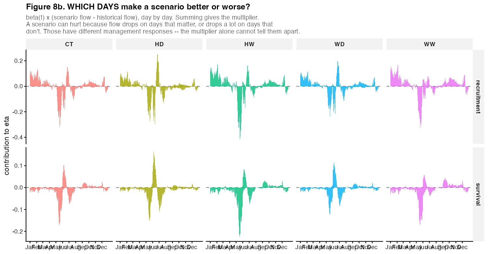
A scenario can act because flow changes on days the population is sensitive to, or because it changes greatly on days it is not. The multiplier alone cannot tell those apart, and they call for different management responses.
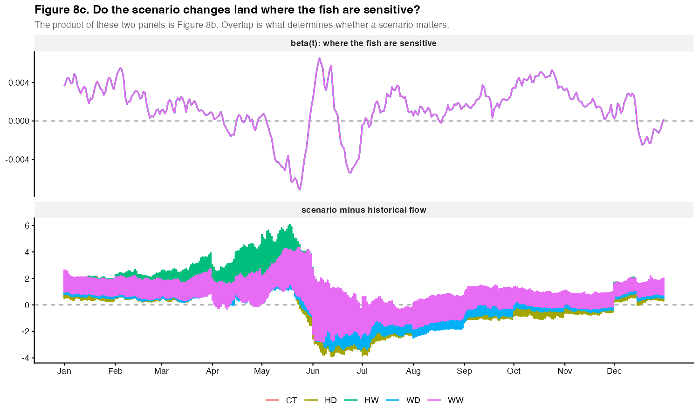
A separate analysis answering a different question. Sections 3 and 4 ask when water helps and what a scenario does over a 30-year projection. This asks: if the summer mean flow settles at a new level, where does the population settle?
Two differences from everything above, both deliberate. It reads the flow-informed IPM, because it propagates the flow response that model already fitted rather than estimating a new one. And it uses its own standardization — the z of the annual summer mean, on exactly the scale the IPM was fitted with.
NOT AVAILABLE — run
R/10_rulecurve.R. It needs the FishCast export (<SITE>_rulecurve_inputs.rds) and the flow-informed posterior it names.
##
## > **Figure not available** — run the corresponding script.##
## > **Figure not available** — run the corresponding script.##
## > **Figure not available** — run the corresponding script.The cross-site synthesis lives on its own page: Among sites. It compares the daily curves across populations, which is the evidence base for the population-ecology question, and it is not repeated here.
Rearing-year effect. The flow lag (2) is shorter than the recruit lag (3), so the hydrograph is the age-0 rearing year, not the spawning year. Spawning-year conditions are not represented, and β_R(d) should not be read as a spawning effect.
Incubation spans the year boundary. On a
calendar axis, December of the spawning year and January–March of the
rearing year fall in different lag years. A mechanism operating
continuously through incubation is split between them and will read
weakly in both (docs/notes/CALENDAR_AXIS.md).
Growth is frozen. Mean mass at age is held at its launch value, so production results capture the flow-on-abundance pathway only, not temperature-mediated growth.
Local linearity. Effects are exact under the fitted model but the model is linear in the standardized anomaly, so large extrapolations beyond the observed flow range are least reliable — which is where the wettest and driest scenarios sit.
Resolution. Where the best-day interval exceeds 90 days, guidance is seasonal. This is a limit of a ~40-year annual record, not of the method.
Stock enters twice. log(R/S) contains −log(S) and S is also the density predictor, so shared posterior uncertainty biases the density coefficient downward (Walters & Ludwig 1981). The flow curves are affected only through the correlation between stock and the flow predictors, which is reported by script 03.
Every number and figure on this page is read from
output/. Regenerate with source("RUN_ALL.R")
then source("render_site.R").